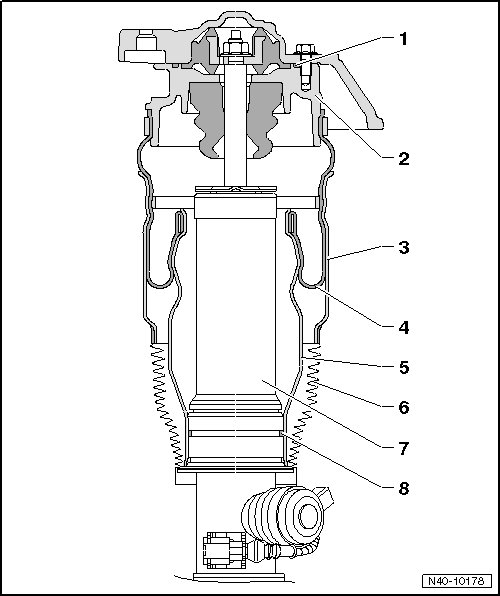

Air Spring Damper Components
Air Spring Damper Components
• The --> [ (Item 2) Cover ] , --> [ (Item 3) Outer guide ] , --> [ (Item 4) Boot ] , and --> [ (Item 5) Rolling piston ] are components of the air spring damper. They are installed together and cannot be disassembled.

1 Seal
• Always replace.
2 Cover
• installed as part of air spring with --> [ (Item 3) Outer guide ] , --> [ (Item 4) Boot ] and --> [ (Item 5) Rolling piston ].
• Cannot be removed and disassembled individually.
3 Outer guide
• Installed as part of air spring with --> [ (Item 2) Cover ] , --> [ (Item 4) Boot ] and --> [ (Item 5) Rolling piston ].
• Cannot be removed and disassembled individually.
4 Boot
• Installed as part of air spring with --> [ (Item 2) Cover ] , --> [ (Item 3) Outer guide ] and --> [ (Item 5) Rolling piston ].
• Cannot be removed and disassembled individually.
5 Rolling piston
• Installed as part of air spring with --> [ (Item 2) Cover ] , --> [ (Item 3) Outer guide ] and --> [ (Item 4) Boot ].
• Cannot be removed and disassembled individually.
6 Boot
• Always replace.
7 Shock absorber
8 Seal
• Always replace.